User handbook · web app
Getting the most out of Bandplaner
A complete tour of every screen and setting, illustrated with live screenshots from a running instance — signed in as band administrator Max Mustermann.
Signing in & switching bands
Bandplaner is a browser app — there's nothing to install. Every account can belong to several bands at once (a cover band and an orchestra, for example) and switch freely between them. This manual walks through every screen using a demo account, Max Mustermann, who administers a band called The Testers.
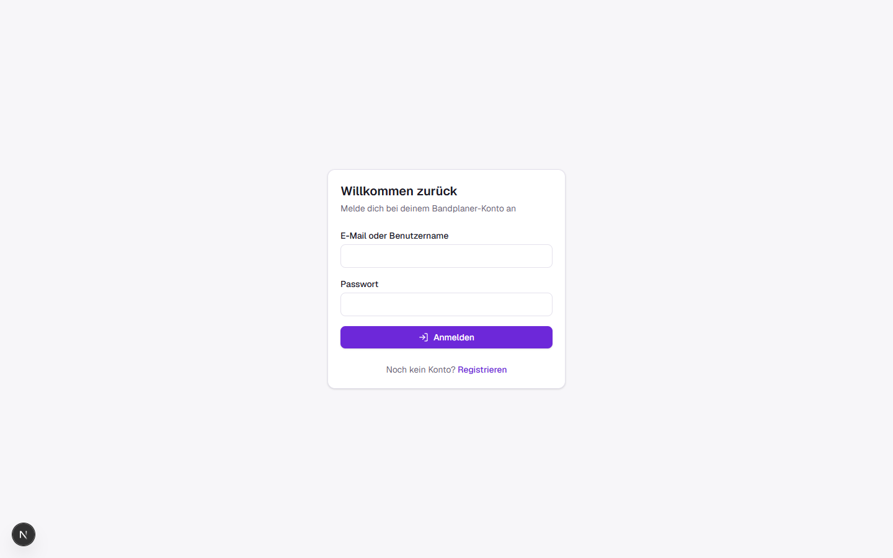
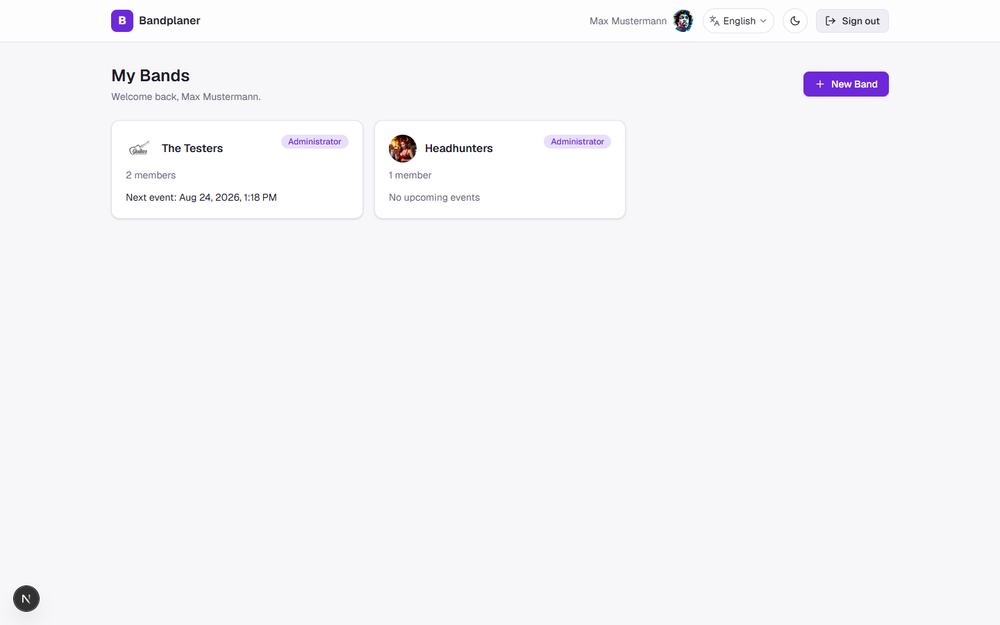
After signing in you land on My Bands: a card per band you belong to, its next upcoming event, and your role. Click a card to enter that band's workspace, or New Band to found one — you become its administrator automatically.
New members join via an emailed invite link (see Band, members & features) and set their own password when accepting it. There's no open sign-up: someone already inside a band has to invite you.
Roles, at a glance
Every permission described later in this manual ultimately comes down to one of these three roles, set per band membership.
| Role | Can do |
|---|---|
| Administrator | Everything: edit any content, manage members and invites, rename or reconfigure the band, turn optional modules on or off. |
| Member | View everything, respond to their own availability, propose songs, edit their own notes/files, and — where an admin has granted it — manage day-to-day content like events or the song library. |
| Guest | A time-limited, read-mostly membership for subs, crew or one-off helpers. Access can auto-expire on a set date so nobody has to remember to remove it. |
Band overview
Overview tabThe landing page for a band once you've picked it: what's coming up, and the band's public-facing profile at a glance.
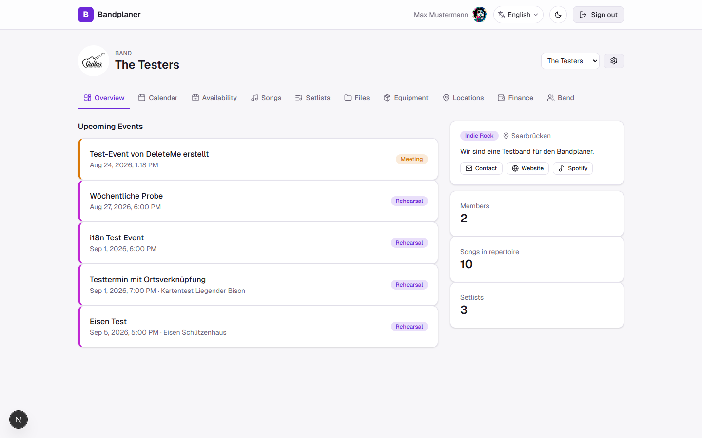
- Upcoming events — the next five events for this band, colour-striped by type (rehearsal, gig, meeting, other), soonest first.
- Band profile card — genre, home city, a short bio, and quick links for contact e-mail, website and Spotify — edited from Band, members & features.
- At-a-glance stats — member count, songs in the active repertoire, and number of saved setlists.
Every screen shares the same header: the band switcher and gear icon (top right) jump to another band or its settings; your avatar, language picker, and light/dark toggle (top left of that cluster) apply to your account everywhere, not just this band.
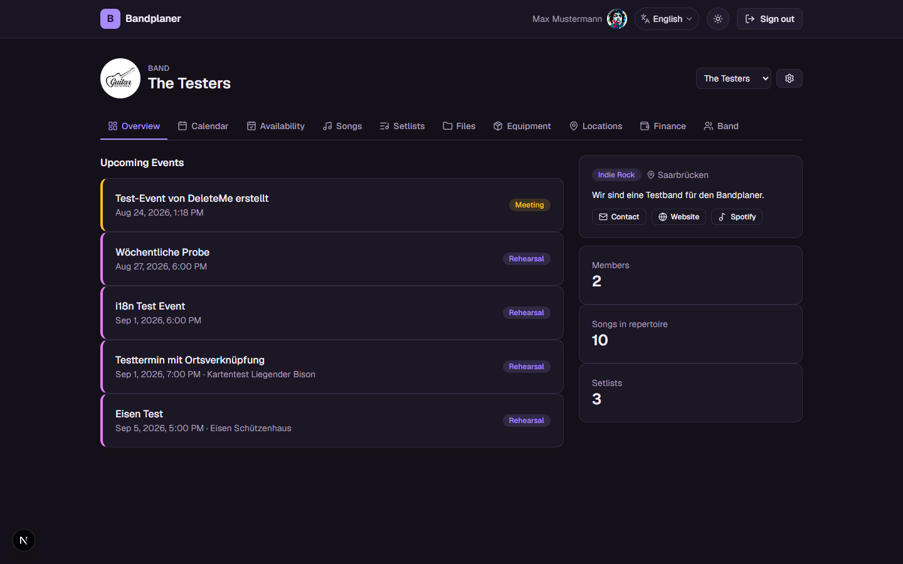
Calendar & events
Calendar tabOne shared calendar per band for rehearsals, gigs, meetings and anything else worth scheduling. Switch between a scrollable list and a full month grid.
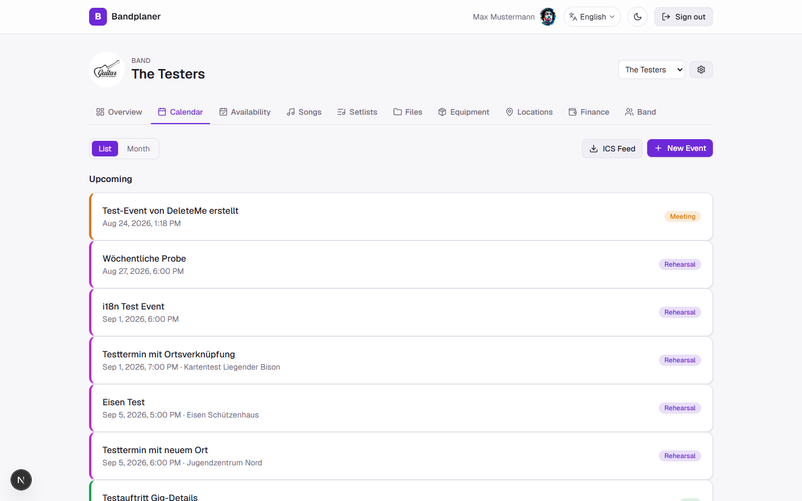
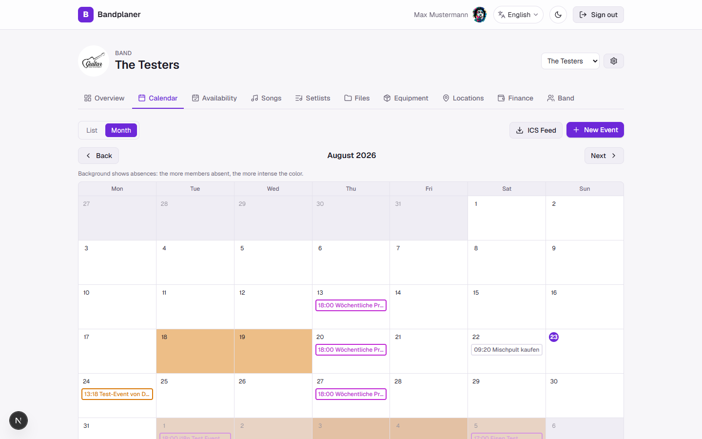
In month view, the background of each day tints automatically: the more members have logged an absence that day, the stronger the colour — a fast way to spot a bad rehearsal date before you even open it. Click ICS Feed to subscribe from Google, Apple or Outlook Calendar so events stay in sync outside the app too.
Creating an event
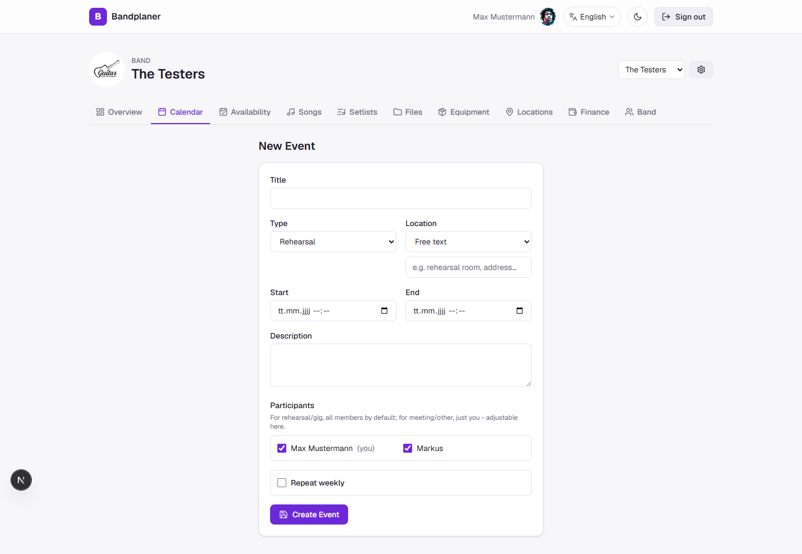
- Type — Rehearsal, Gig, Meeting or Other — drives the colour coding and, for gigs, unlocks extra fields.
- Location — free text, or — once the Locations module is on — pick a saved venue from the catalog instead.
- Participants — rehearsals and gigs default to the whole band; meetings and other events default to just you. Adjust the checklist either way before saving.
- Repeat weekly — spins up a whole series of events in one go, e.g. a standing Thursday rehearsal.
Event detail: a rehearsal
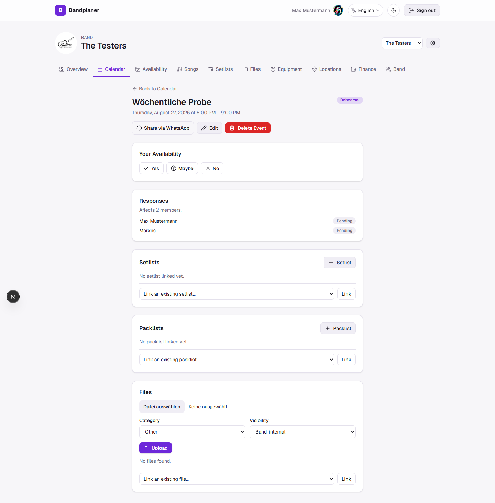
Every event page opens with your own Yes / Maybe / No button and a live list of who else has answered. Below that: setlists, packing lists and files can each be linked straight to this event (created fresh or picked from an existing one), and Share via WhatsApp drops a ready-made message with date, time and location into your chat app.
Event detail: a gig
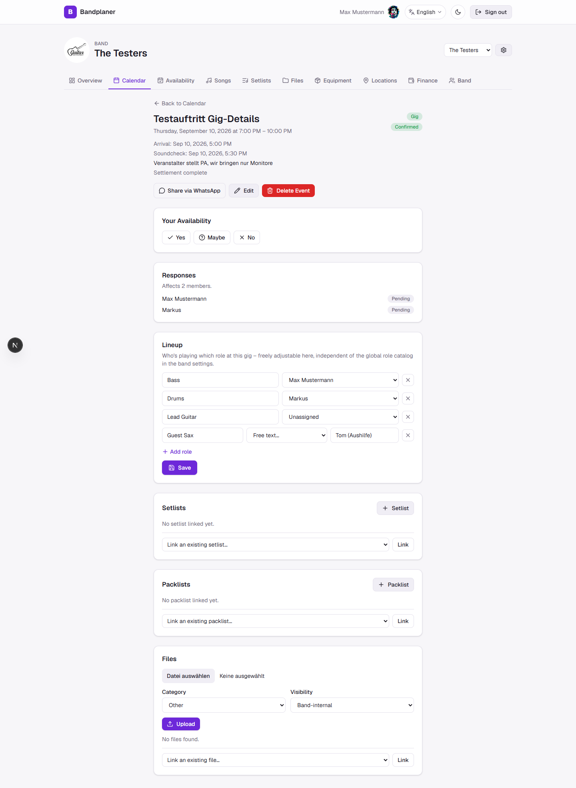
- Gig-only fields — arrival and soundcheck time, free-text technical requirements, and a status from Inquiry through Confirmed, Done or Cancelled.
- Lineup — who plays which role at this specific gig. Pick any band member per role, type a free-text name for a fill-in musician with no account, or add extra roles on the fly — independent of the reusable role list in band settings.
- Settlement status — once the Finance module is on, shows whether this gig's fee has been fully allocated to members yet.
Availability
Availability tabWhere per-event Yes/Maybe/No answers add up to a plan — and where longer absences that aren't tied to any one event live.
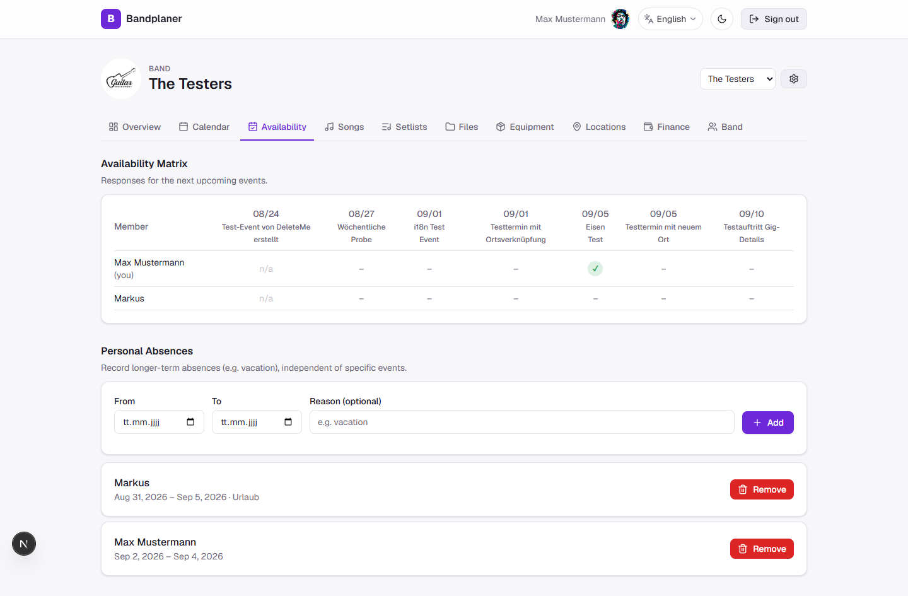
- Availability matrix — everyone's response to every upcoming event in one grid, so a rehearsal date with too many blanks or crosses jumps out immediately.
- Personal absences — log a vacation or blocked stretch once, by date range, instead of declining every event inside it one by one. Overlapping events flag the conflict automatically on their own page.
Song library
Songs tabThe band's shared repertoire: one entry per song, filterable by where it stands in the pipeline from first idea to stage-ready.
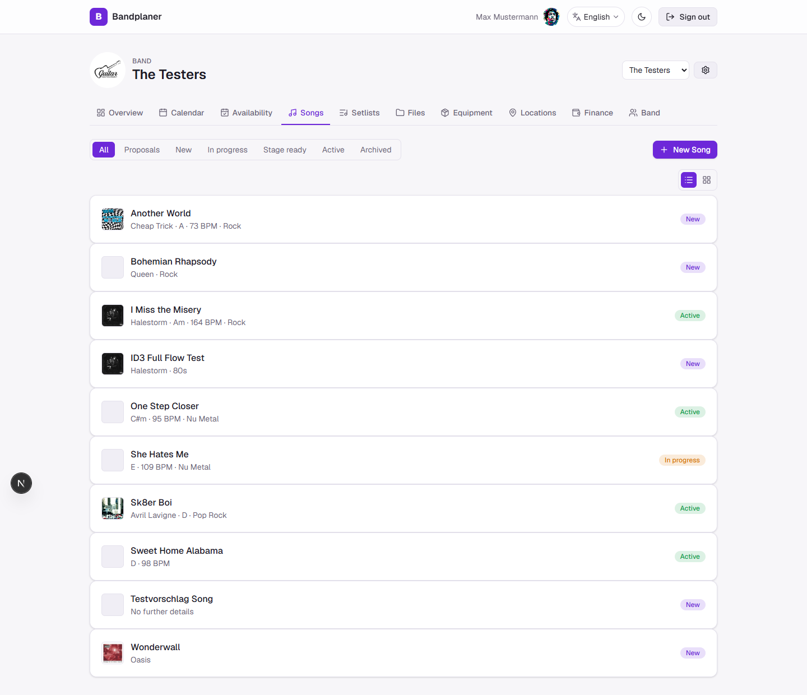
Adding a song — and letting the app do the typing
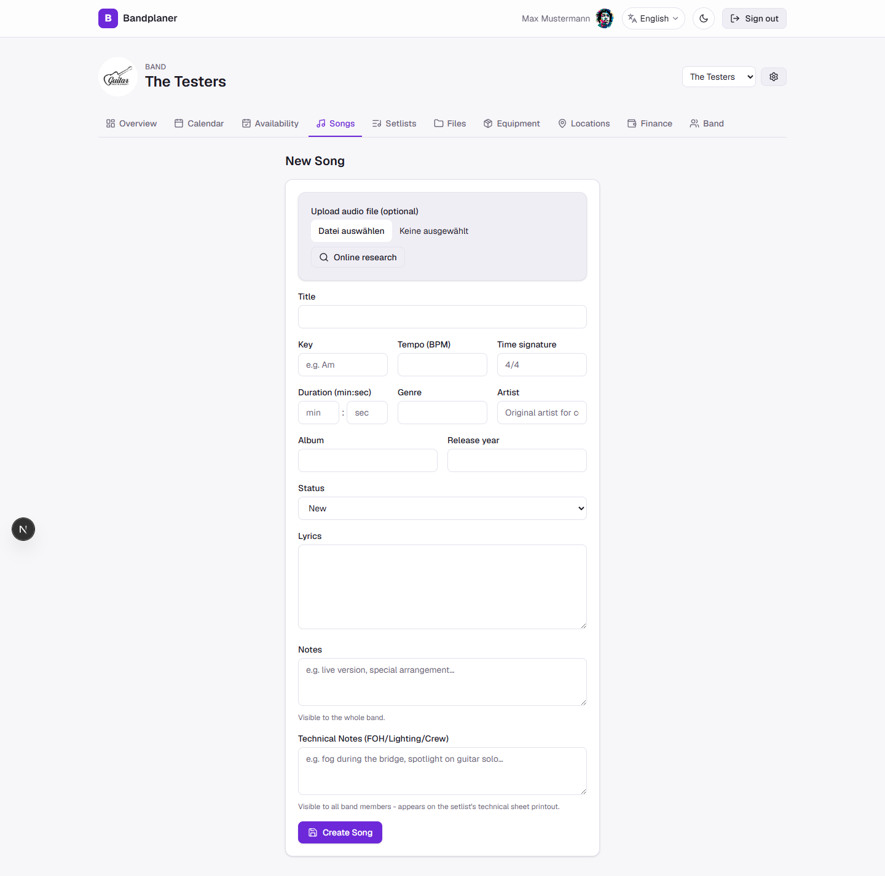
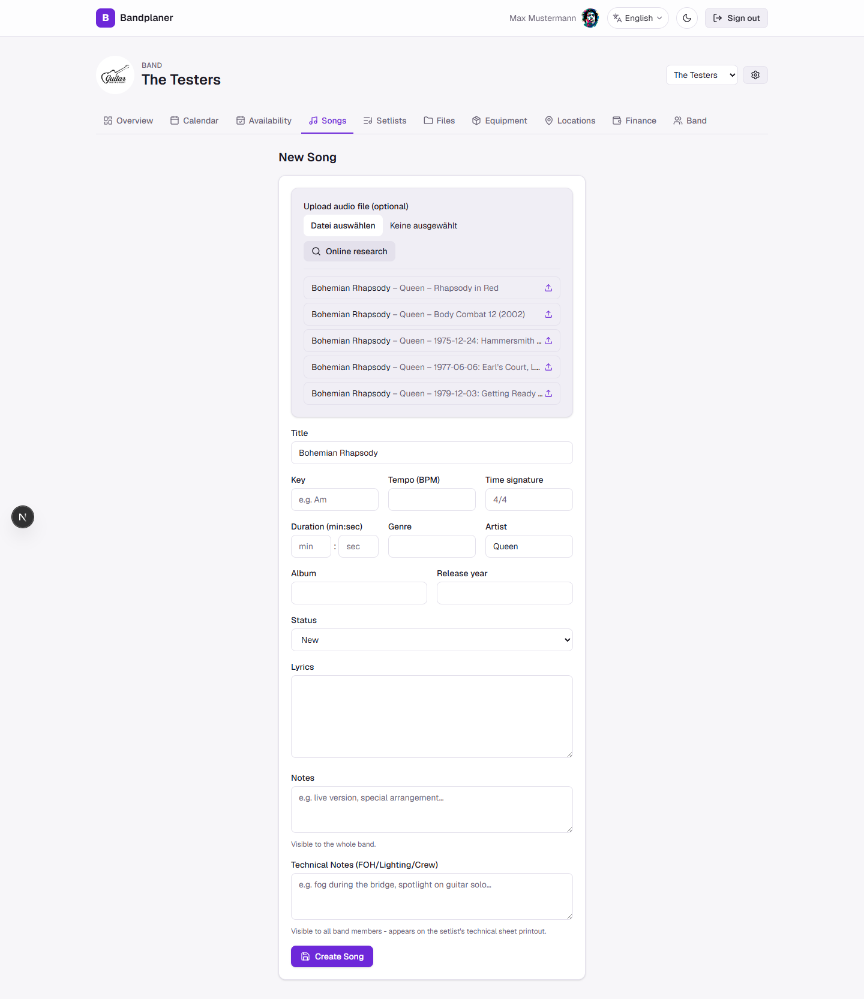
Type a title (and, for cover songs, the original artist) and click Online research: Bandplaner looks the song up in music databases and lists candidate releases — including different live albums or re-releases — each with an adopt button that fills in tempo, genre, album, release year and cover art for you. Uploading an audio file works the same way in reverse: its ID3 tags are read automatically where present. Every field stays fully editable by hand either way, and nothing is ever overwritten without your say-so.
Song detail: files, notes and personal stage cues
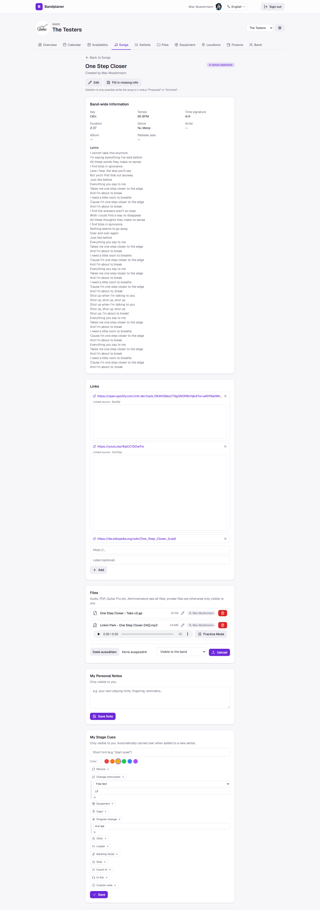
- Band-wide information — key, tempo, time signature, duration, genre, artist, album and release year — the same for everyone.
- Links & files — reference links to streaming platforms, plus uploaded audio, PDFs or Guitar Pro tabs. Files can be marked private (just you) or visible to the whole band.
- My Personal Notes — your own playing hints or fingering reminders, visible to nobody else.
- My Stage Cues — a short private hint, a colour, and pick-from-a-list cue badges (retune, change instrument, capo, program change, click, looper, backing vocal, solo, count-in, in-ear, or a custom note). These carry over automatically the first time the song is added to a setlist — see Setlists.
Proposing a song & voting
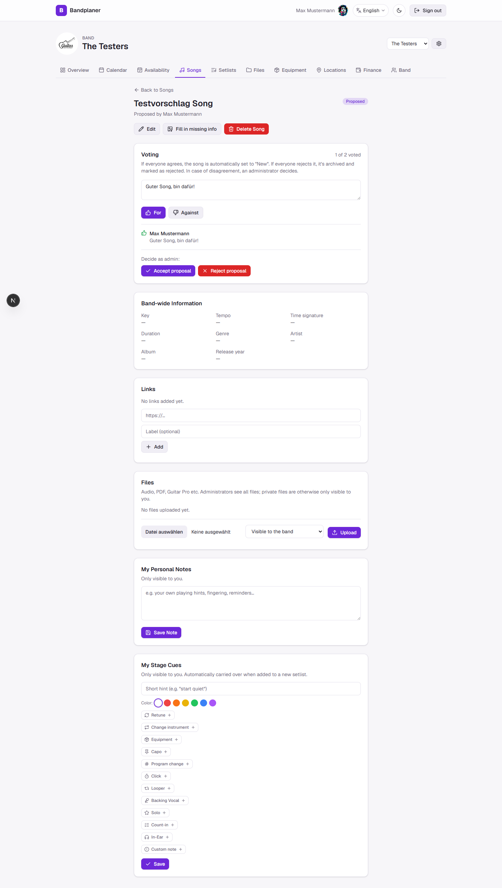
Any member can put a song forward; it enters the library with a Proposed status and a visible Voting card. Everyone votes For or Against with an optional comment — votes carry the voter's name, there's no anonymous voting. If the whole band votes the same way, the outcome is automatic: unanimously for and it becomes New; unanimously against and it's archived and marked rejected. Any split decision is left for an administrator to resolve with an Accept proposal / Reject proposal call.
Practice Mode
Optional module — Media playerA built-in practice tool for any uploaded audio file, opened with the Practice Mode button next to a song's audio player. Everything runs locally in the browser — nothing is re-uploaded or re-encoded.

- Tempo — slow a track down or speed it up as a percentage, independent of pitch — the song stays in the same key at any speed.
- Key — transpose in semitone steps, independent of tempo — handy for a capo change or a vocalist's range, without touching playback speed.
- Section loop — A from here / B to here mark a passage on the waveform for endless repeat — perfect for a tricky bridge. Click anywhere on the waveform to jump there; drag to mark a loop directly.
- Detect key — an optional one-click estimate of the track's musical key, with a nudge to adopt it into the song's shared metadata if it differs from what's stored. It's an approximation (major/minor relatives are hard to tell apart automatically) and never changes song data on its own.
Setlists
Setlists tabRunning orders built from the song library, reusable across events and exportable for the stage or the tech crew.
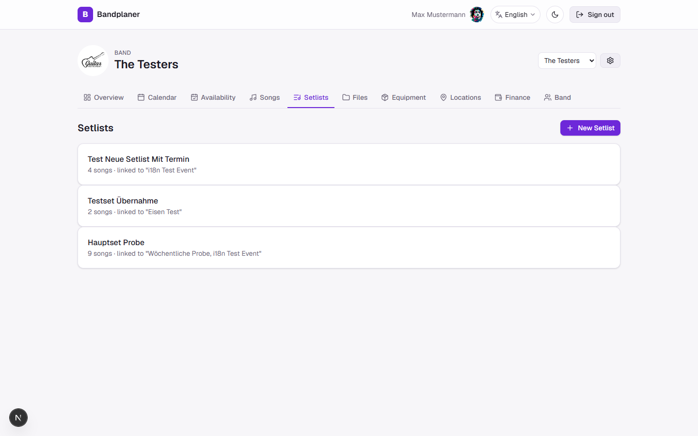

- Order — drag songs in from the library on the right, then drag to reorder. Total running time updates live from each song's stored duration.
- Beyond songs — add a custom entry (e.g. "Pause", with its own duration and an option to skip it in the numbering), a plain comment line visible to everyone, or a section divider to label a block like "Part 2".
- Equipment icon display — controls how an instrument-change cue's icon appears in this setlist: small inside the hint badge, large next to the key/BPM, or hidden entirely.
- Reused across events — one setlist can be linked to several events; a per-event context selector applies your personal notes and cues to whichever upcoming date you pick.
- My Notes / Technical Notes — a private note just for you, and a shared technical note for FOH, lighting or crew that prints on the technical sheet.
- Share, Print, Technical Sheet — a WhatsApp-ready summary, a big-print stage view personalised with your own colours and cues, and a separate crew-facing technical sheet.
Locations
Optional moduleA reusable catalog of venues, so a gig's address, stage notes and contact details only have to be entered once.
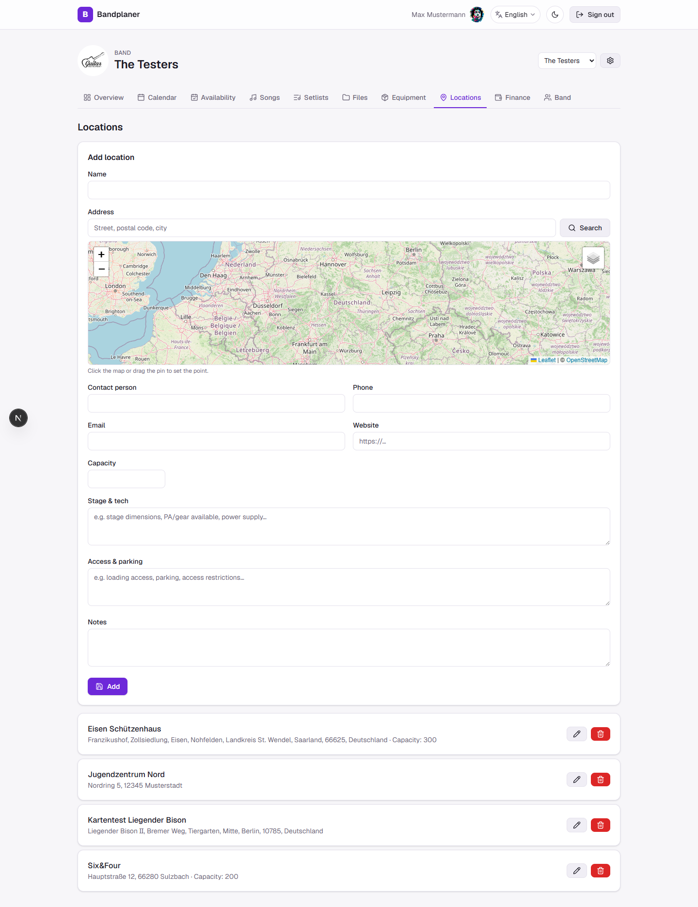
- Address search — type a street or venue name and Bandplaner geocodes it onto the map for you; the pin can also be dragged by hand.
- Contact & capacity — a booking contact's name, phone, e-mail and website, plus the venue's capacity.
- Stage & tech / Access & parking — free-text notes for stage size, house PA, power, load-in access and parking — read once, reused at every gig there.
- Linked everywhere — pick a saved location instead of free text when creating an event, and attach files (a rider, a stage plot) directly to the venue.
Equipment & packing lists
Optional moduleA catalog of everything the band owns or brings, and checklists built from it for a specific gig or rehearsal.
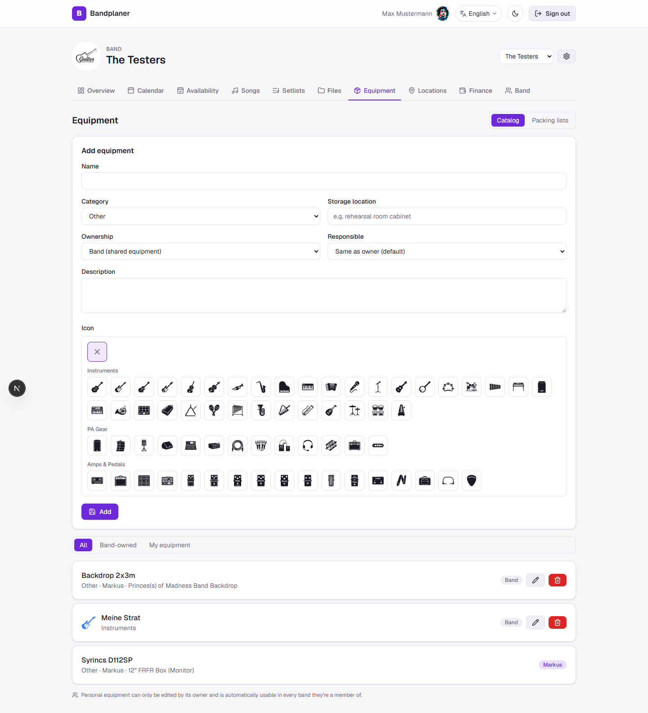
- Ownership — each item belongs either to the band, or to one member personally — personal gear is automatically usable in every band that member plays in, and only its owner can edit it.
- Responsible person — optionally set independently of ownership — whoever's actually in charge of hauling the PA, say — and used as the default assignee when the item lands on a packing list.
- Category & icon — a broad category (instruments, PA, amps & pedals, stage gear, monitoring, personal, other) plus a pickable icon and colour for fast visual scanning.
Packing lists
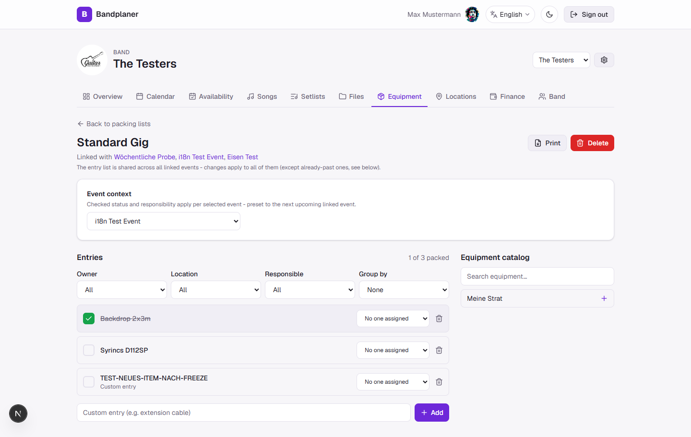
- Built from the catalog — search and add equipment items directly, or type a one-off custom entry (an extension cable, say) that isn't worth cataloguing.
- Filter & group — by owner, storage location or responsible person — useful once a list runs long — with a live packed-count at the top.
- Linked to events — reused across every gig or rehearsal it's attached to; like setlists, a linked event that's already past freezes its own "as packed" snapshot the moment the list changes again.
- Print — a clean printable checklist for loading the car.
Files
Files tabOne shared, quota-tracked file store for the band — contracts, photos, recordings, sheet music, video, anything else — independent of the files attached directly to individual songs.
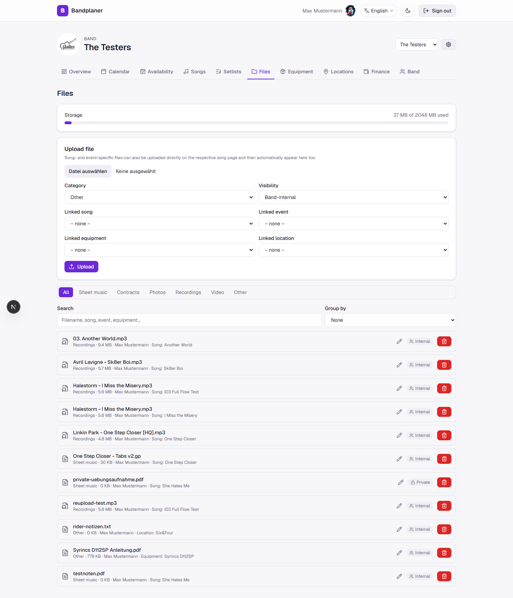
- Storage meter — a simple used-of-total bar so nobody's surprised by a full quota mid-upload.
- Category & visibility — file into Sheet music, Contracts, Photos, Recordings, Video or Other; mark each file Band-internal (members only) or share it via a login-free public link.
- Linking — optionally tie a file to a song, event, equipment item or location at upload time — or leave it unlinked in the general pool.
- One library, many sources — files uploaded on a song, event or equipment page automatically show up here too, so this list is always the complete picture.
- Search & group — by filename or by the song/event/equipment it's linked to.
Finance
Optional module — FinanceIncome and expenses for the band, with amounts split between members and a confirmation step on each side.
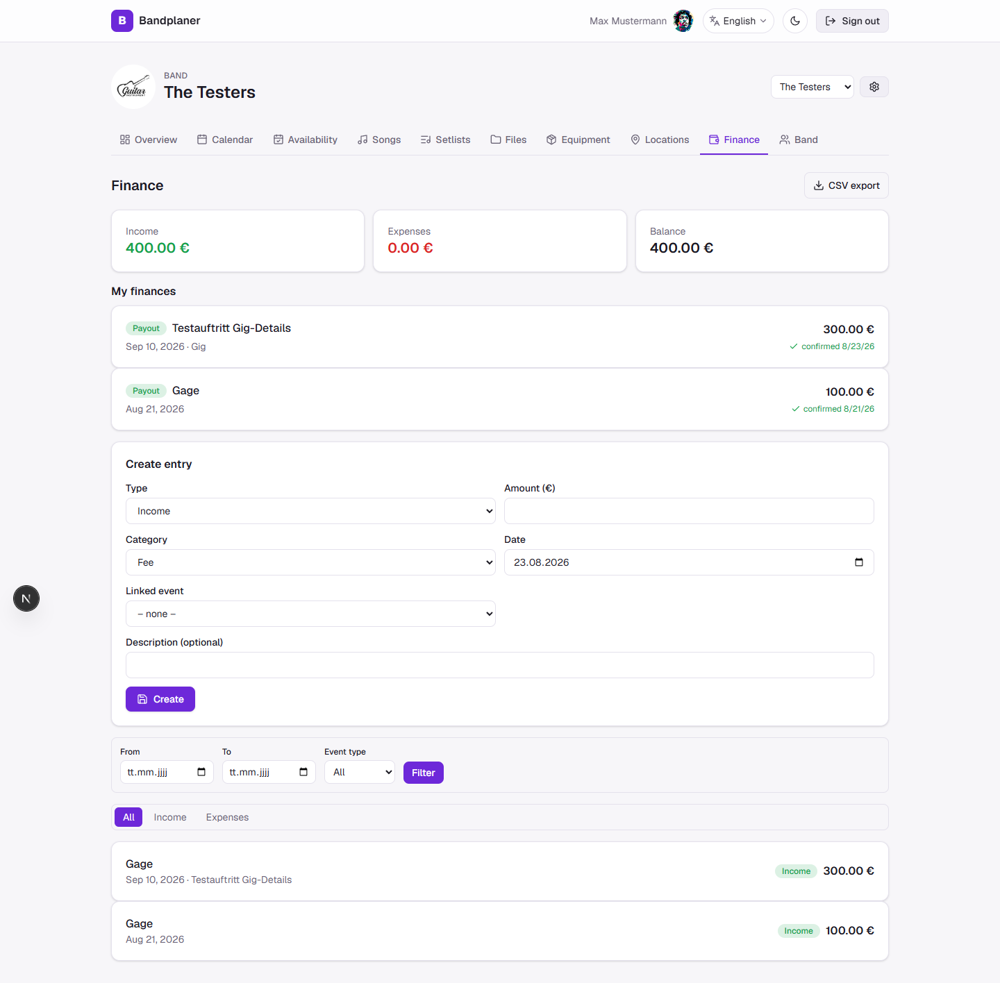
- Two visibility levels — only finance admins (a role granted per member, independent of Administrator/Member — see Band settings) see the full ledger and totals; everyone else sees only their own fees and cost shares under "My finances".
- Entries — an income or expense, with a category, amount, date, optional description, and an optional link to the event it belongs to (a gig fee, say).
- Allocations & confirmation — a finance admin splits each entry across members. A member confirms receiving their share of an income; a finance admin confirms a member has paid their share of an expense — until then it shows as pending.
- Settlement mode — "No band account" requires every entry to be 100% allocated to members; "Band account" lets the band hold its own balance, with any unallocated remainder settled against it automatically — set in Band settings.
- CSV export — the full ledger, ready for a tax return or external bookkeeping.
Band, members & features
Band tabAdministrator territory: the band's public profile, who belongs to it and with what role, and which optional modules are switched on — everything this manual calls out as "optional module" is controlled from here.
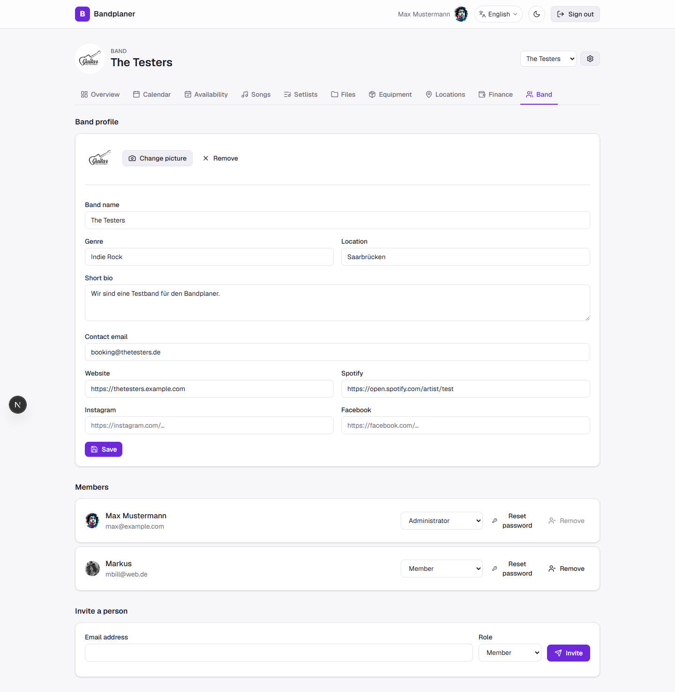
- Band profile — name, picture, genre, home city, a short bio, and contact/website/Spotify/Instagram/Facebook links — this is internal band information for the app and its exports, not a public "link-in-bio" page.
- Members — change anyone's role, trigger a password reset for someone who's locked out (works even without an e-mail server configured), or remove them.
- Invite a person — enter an e-mail and a starting role; they receive a link to accept and set their own password.
Feature management
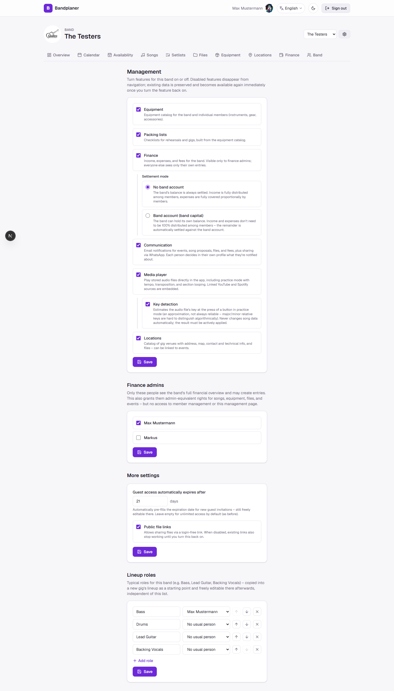
Every optional module in this manual — Equipment, Packing lists, Finance, Media player (and its key-detection sub-toggle), and Locations — is a simple on/off switch here. Turning one off just hides it from the navigation; nothing is deleted, and all its data comes straight back the moment it's switched back on.
- Finance admins — tick which members see the full Finance ledger — this also grants them admin-equivalent rights for songs, equipment, files and events, but not member management or this settings page itself.
- Guest access expiry — a default number of days that pre-fills new guest invitations, still freely editable per invite; leave blank for unlimited access by default.
- Public file links — the band-wide kill switch described in Files.
- Lineup roles — a reusable, ordered list of typical roles (Bass, Lead Guitar, …), each with an optional usual player — copied in as a starting point whenever a new gig's lineup is created, and freely edited from there without affecting this master list.
Your profile & account
Avatar menu → /profileAccount-level settings that follow you across every band, plus your data and privacy controls.
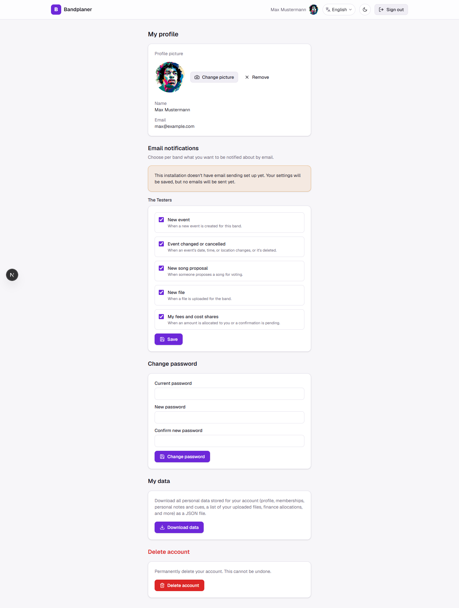
- Profile picture, name & e-mail — your account identity, shown everywhere from member lists to vote tallies.
- Email notifications — per band, choose what you're emailed about — new events, event changes, new song proposals, new files, and your own fees or cost shares. (Requires the band's Communication module and a configured mail server; settings still save without one.)
- Change password — current password, new password, confirmation.
- My data — download everything stored about you — profile, memberships, personal notes and cues, your uploaded files, finance allocations and more — as a single JSON file.
- Delete account — a permanent, self-service deletion with a double confirmation step. This is genuinely irreversible.
Language & appearance
The language switcher and the light/dark toggle sit in the header of every page (see the band overview screenshots above) — not tucked away in settings — because they're meant to be changed on the fly. Bandplaner currently ships English, German, French and Swedish; your choice is remembered on your account and applied from your very next page load.